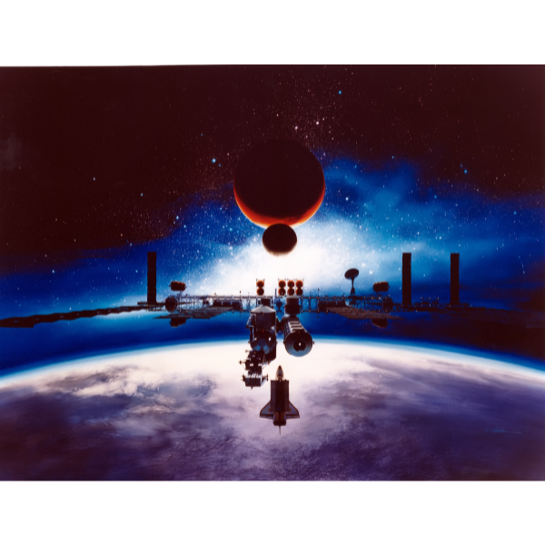
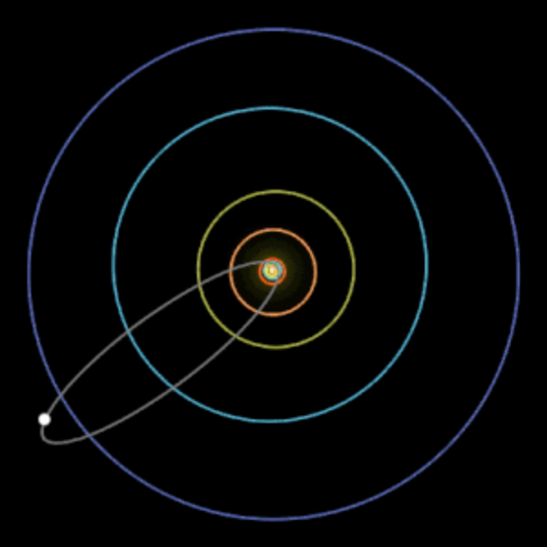

Mecánica Orbital
Para entender y comenzar a explicar de qué se trata la astrodinámica es importante situarnos y tener claro algunas definiciones y conceptos básicos como los que se explican a continuación.
Conceptos relacionados
- Aeronáutica
- Es el estudio que contempla cualquier actividad aérea de máximo 100km de altitud desde la superficie terrestre (nivel del mar)
- Astronáutica
- Es toda actividad a más de 100 km de la superficie terrestre. Se estudia todo el entorno espacial, el vacío y todas sus consecuencias, tecnologías aeroespaciales, exploración espacial y supervivencia humana, de tal manera que toda la ciencia e ingeniería aplicada se realiza teniendo en cuenta todos estos factores. En esta página web sobre sistemas espaciales no abarcaremos todos estos contenidos pero si tenemos una categoría muy interesante: Medio Ambiente Espacial leyendo este artículo tendremos una idea mucho más amplia de todo el entorno espacial y sus implicaciones en las misiones y sistemas.
- 
- Astrodinámica
- Forma parte de la astronáutica. Podemos definir astrodinámica como una rama de la ingeniería aeroespacial y de la física, especialmente las leyes de Newton de la gravedad y el movimiento. La astrodinámica se basa en estudiar el comportamiento de los cuerpos que orbitan en el espacio exterior y alrededor de la tierra. Algunos de estos cuerpos serían los satélites, naves espaciales, planetas, asteroides y otros objetos.
- 
Este estudio se puede centrar en el cálculo y predicción de movimientos, control de estos objetos y velocidades, teniendo en cuenta diversos factores como, la masa de los objetos, la fuerza de atracción gravitatoria, la resistencia atmosférica, viento solar, perturbaciones electromagnéticas y más. Todo esto es fundamental para el diseño, planificación y desarrollo de misiones espaciales y trayectorias fuera del ámbito terrestre.
Dentro de la astrodinámica debemos aclarar que se encuentra, la mecánica orbital que sería el estudio de todos estos cuerpos que orbitan el espacio exterior en condiciones ideales, pero en astrodinámica se estudia su aplicación práctica a misiones espaciales teniendo en cuenta todas sus posibles perturbaciones y entorno real.
Por el momento no ampliaremos tanto el contenido de esta página web sobre sistemas de ingeniería aeroespacial, pero si seguís leyendo más abajo podéis comprender un poco más sobre la mecánica orbital, ya que es el tema en el que nos enfocaremos más por el momento.
La Mecánica Orbital
"La mecánica orbital es un campo fascinante que nos permite comprender la danza celestial de los cuerpos celestes en el vasto universo."
Dr. Astrónomo, Instituto de Astronomía
La mecánica orbital únicamente se centra en el estudio de órbitas aplicando los principios básicos de la física, la descripción de trayectorias y la manera de situarse en el espacio. La gran diferencia respecto a la astrodinámica es que en la mecánica orbital se suele considerar muchas situaciones como ideales sin tener en cuenta muchas perturbaciones.
Para adentrarnos en la mecánica orbital y tener una idea genérica es necesarios aprender y tener claro algún conceptos y fundamentos básicos como lo que se explican continuación:
- La ley de gravitación universal de newton
- Es la base de la mecánica orbital.
- Fue concebida por Isaac Newton y se recomienda su estudio y entendimiento en profundidad.
- Por definición, establece que dos objetos con masas diferentes se atraen gravitacionalmente, y la fuerza de atracción entre ellos es directamente proporcional al producto de sus masas e inversamente proporcional al cuadrado de la distancia que los separa.
- Las Leyes de Kepler
- Primera ley (Ley de las Órbitas): Esta ley establece que los planetas se mueven alrededor del Sol en órbitas elípticas, con el Sol ubicado en uno de los focos de la elipse. En otras palabras, los planetas no siguen órbitas circulares perfectas alrededor del Sol, como se creía en la antigüedad, sino que sus órbitas son elípticas.
- Segunda ley (Ley de las Áreas Iguales): La segunda ley de Kepler establece que un planeta barre áreas iguales en tiempos iguales a lo largo de su órbita elíptica. Esto significa que un planeta se mueve más rápido cuando está más cerca del Sol (perihelio) y más lento cuando está más lejos (afelio). En otras palabras, la velocidad del planeta varía a lo largo de su órbita, pero el área total barrida en un tiempo determinado es constante.
- Tercera ley (Ley de las Proporciones Periódicas): La tercera ley de Kepler establece una relación matemática entre el período orbital (el tiempo que un planeta tarda en dar una vuelta completa alrededor del Sol) y el semieje mayor de su órbita elíptica (la distancia promedio desde el planeta al Sol). La ley se puede expresar de la siguiente manera: "El cuadrado del período orbital es directamente proporcional al cubo del semieje mayor de la órbita". Esta ley permite comparar los movimientos de diferentes planetas y es fundamental en la predicción de sus órbitas.
Qué son las Órbitas y como se clasifican
Una órbita es una trayectoria que describe un cuerpo moviéndose alrededor de otro cuerpo con una masa mucho mayor. El hecho de que la masa de un objeto sea inmensamente mayor que el otro objeto crea una influencia gravitatoria que permite una fuerza de atracción del objeto más pequeño.
Las órbitas se pueden clasificar de muchas maneras y es importante dar un repaso a estos conceptos para familiarizarse y entender mucho mejor la mecánica orbital.
Clasificación céntrica
Heliocéntrica: el centro de la órbita es el sol
Geocéntrica: el centro de la órbita es la tierra
Clasificación por altidud
LEO(Low Earth Orbit): de 160-2000 km de altitud, principalmente para la observación terrestre, su periodo orbital de pocas horas o minutos, son las órbitas de mayor velocidad, en esta órbita se sitúa la estación espacial internacional ISS a unos 400 km de altitud.
MEO(Medium Earth Orbit): de 2000km a 35.000km, periodo orbital de 12h aproximadamente, se suelen poner satélites de tecnologías de posicionamiento global.
HEO(High Earth Orbit): a más de 35.000 km, periodo orbital de igual o más de 24h, se utiliza para meteorología y comunicaciones
Clasificación por inclinación